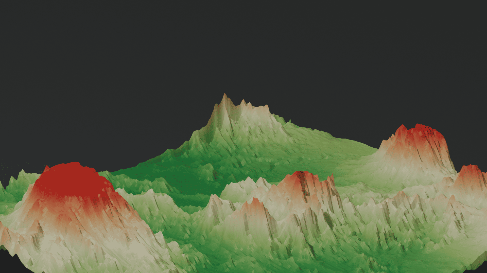
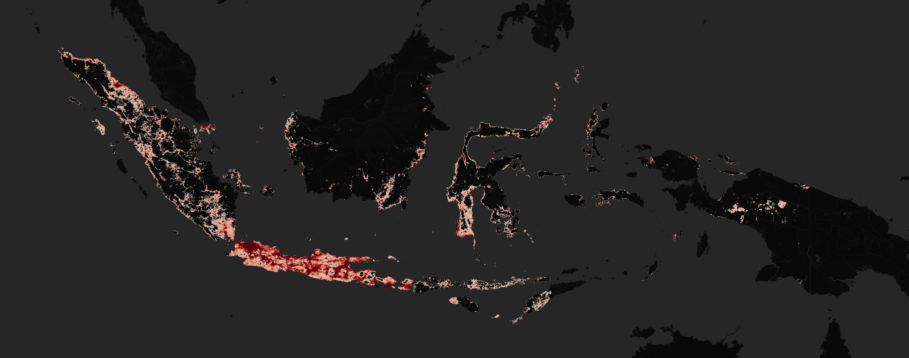
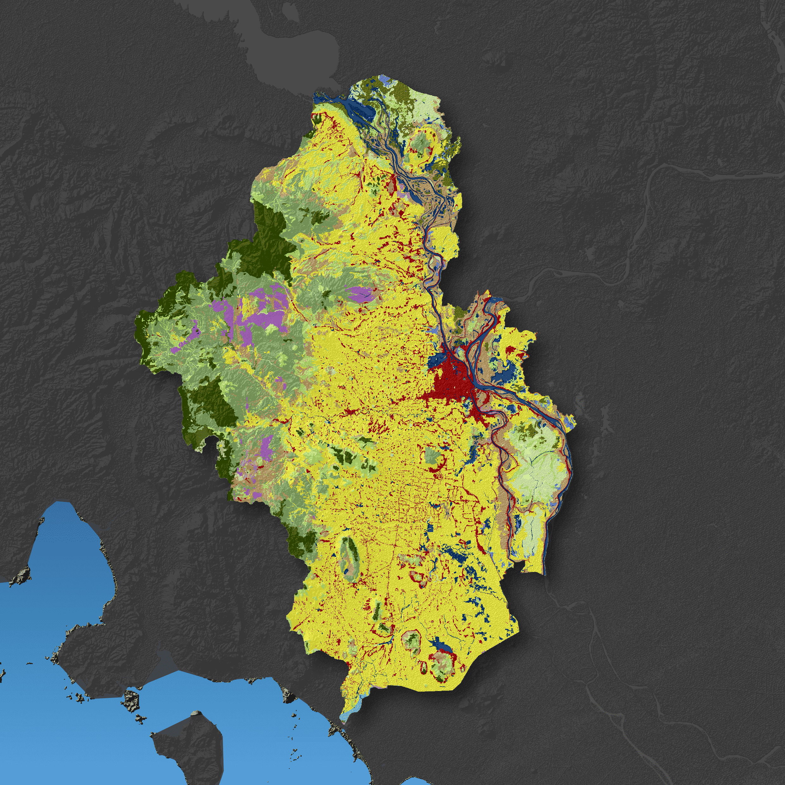
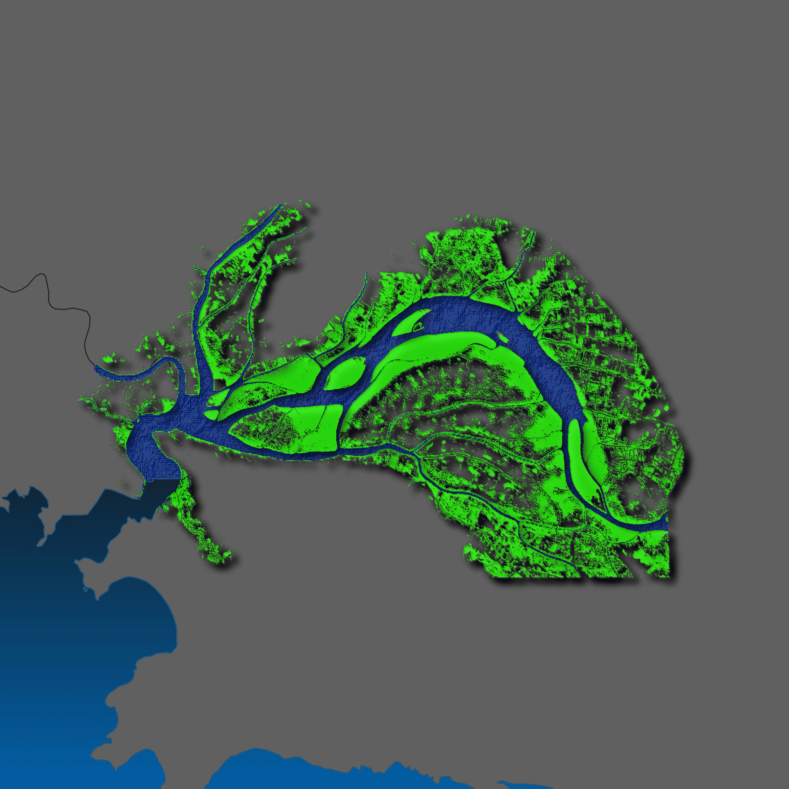
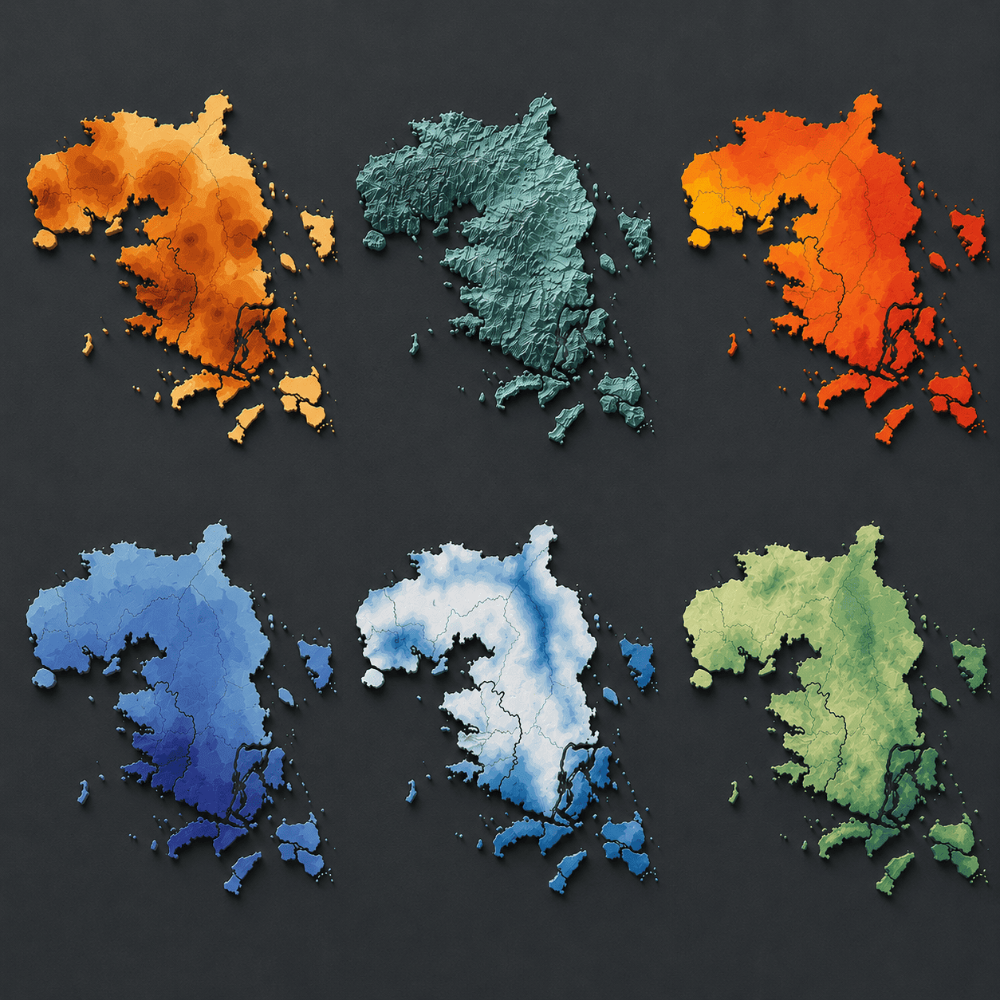
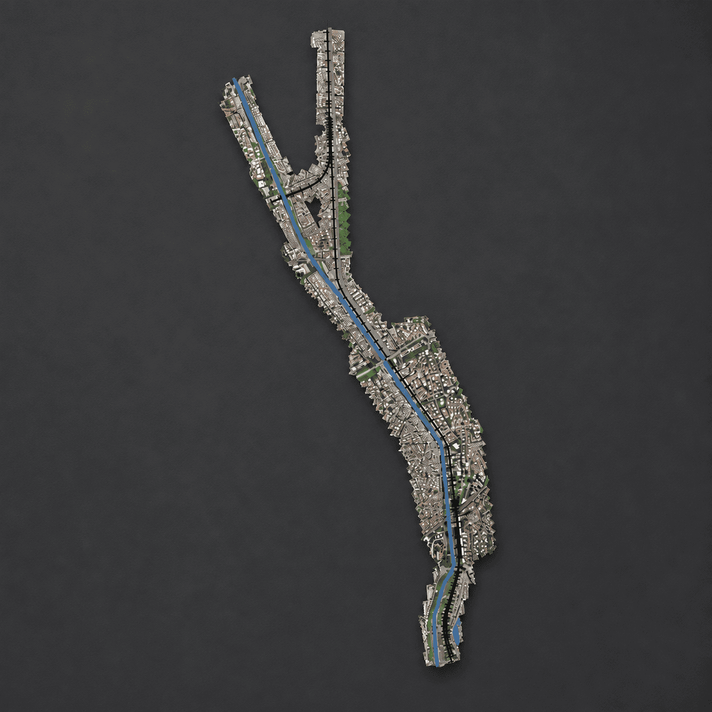
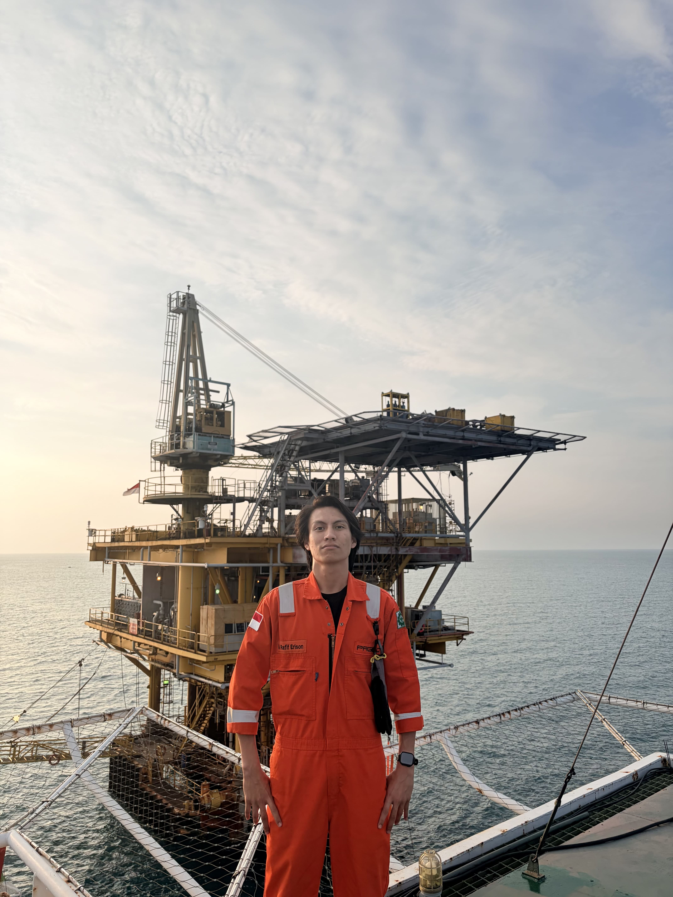

Available for select projects
Maps that make
complex places clear.
I’m Muhammad Rafif Erison, a geospatial analyst and cartographer crafting precise, compelling spatial stories from data.
↓
Spatial data, made visible.
( 01 — ABOUT )
From raw geodata to decisions people can see.
I combine GIS analysis, remote sensing, and careful cartographic design to turn geographic information into work that is useful, accurate, and easy to understand.
( 02 — SELECTED WORK )
A closer look at the work.
Click a project to expand it.





( 03 — HOW I CAN HELP )
01
GIS & spatial analysis
Turning location data into clear, defensible insight.
02
Cartography & map design
Publication-ready maps that look as good as they read.
03
Remote sensing
Extracting land, water, vegetation, and change from imagery.
04
Drone & terrain mapping
Detailed visualisation for a more complete view of place.
( CLIENT WORDS )
Trusted for the details.
Clear mapping, precise insight, and dashboards that are easy to use.

( A LITTLE ABOUT ME )
Grounded in the field.
Precise in the data.
I’m a Geodesy and Geomatics engineer with experience across hydrographic survey, remote sensing, GIS analysis, and cartography. I enjoy the work where technical accuracy meets a clear visual story.
View my career profile ↗( 04 — CONTACT )
Have a place,
a question, or a dataset?
Let’s turn it into something clear and useful.